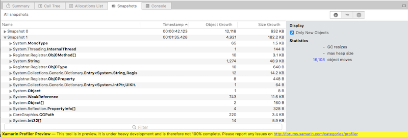
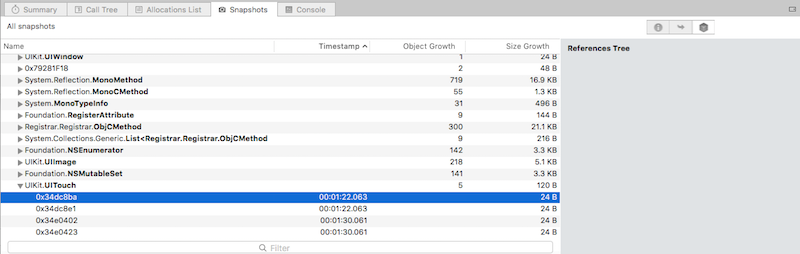
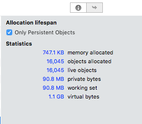
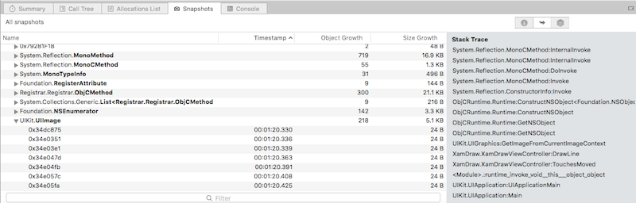

Duration
10 minutes
Goals
In this demonstration, we will examine an application and watch it's memory allocation to identify some potential improvements we can make in the code.
Requirements
If you'd like to run this demo yourself, then you will need to install the Xamarin Profiler. This will work best (for this example) on macOS since we are profiling a Xamarin.iOS application here. You must also have an MSDN Enterprise license to use the Xamarin Profiler.
Assets
The provided Exercise 1 folder contains a subfolder named Start with a pre-built Xamarin.iOS application we will use with the Xamarin Profiler.
Challenge
We will run the supplied starter application under the Xamarin Profiler to observe it's memory behavior. There are a few places where we can optimize the code to better utilize memory.
Our basic steps will be:
- Launch the XamDraw application in the Xamarin Profiler.
- Draw on the screen and take a snapshot.
- Examine the memory objects still in use.
- Identify objects which should be collected earlier.
- Make changes in code to release objects more quickly.
- Verify changes with Profiler.
Steps
Below are the step-by-step instructions to run the demonstration.
Launch the XamDraw application in the Xamarin Profiler
Let's start by running our application in the profiler.
- Open the Start/XamDraw.sln solution in Visual Studio for Mac.
- Build the solution and then use the Run > Start Profiling menu option to open it in the Xamarin.Profiler.
- When the profile starts, select the Allocations profiling template.
- Once the app has launched in the iOS Simulator, take a snapshot by clicking the camera icon in the toolbar of the profiler. This will give us an "initial state" of the app.
Draw on the screen and take a snapshot
- Next, draw some lines on the app surface and then take another snapshot. Use the Option key to simulate two touches simultaneously.
- Each time we take a snapshot, the Profiler will force a GC first to cleanup memory. So what we see in the snapshot are objects which survived the collection.
Examine the memory objects still in use
- Switch to the Snapshots tab in the profiler window and examine the output. Make sure to check the "Only New Objects" checkbox in the sidebar. If the sidebar is not visible, just click the little box on the right side of the view tab set. 
Identify objects which should be collected earlier
-
Look for objects which should have been collected - e.g. things which we don't expect to see a lot of. Here are some examples which you might find in this app:
CGPathobjects used to draw the lines.UITouchobjects which tracked the touch events.UIImageobjects which are used to render the output - there should only be one of these.UIColorobjects which tracked the color of each touch.
- Select one of the objects and switch to the References section in the sidebar. If you don't see any references, then this object is eligible for collection but was promoted to the next generation because it was held too long. 
-
We can verify this by switching back to the Summary tab and selecting Only Persistent Objects in the side bar so we only see "live" objects. Sort the objects by class and find the
UIImageset - then take another snapshot (which forces a GC) and they should all go away.

Make changes in code to release objects more quickly
- Let's work on the
UIImageset first. Select one of theUIImageinstances and click on the Stack Trace button in the side bar. -
This tells us where the image is being allocated. Here we can see (if we go down the stack far enough), that it's in
XamDrawViewController.Drawline.

-
Close the profiler and switch back to the code. See if you can rework the code to get rid of the image earlier by calling
Disposeon it. -
You can also get rid of the temporary
CGPathobjects in the same routine by wrapping the creation of the path in ausingblock.
Verify changes with Profiler
Build and re-run the application in the profiler and see if the objects are still present in your snapshots. You can check your code changes by looking at the Completed sample included in the Exercise 1 folder.
Summary
In this demonstration, you've seen how to utilize the Xamarin Profiler tool to diagnose Xamarin based applications. The same things we did here would be applicable to any profiler - so you could follow the same basic procedure using the Visual Studio profiler for example, or RedGate's ANTs profiler.